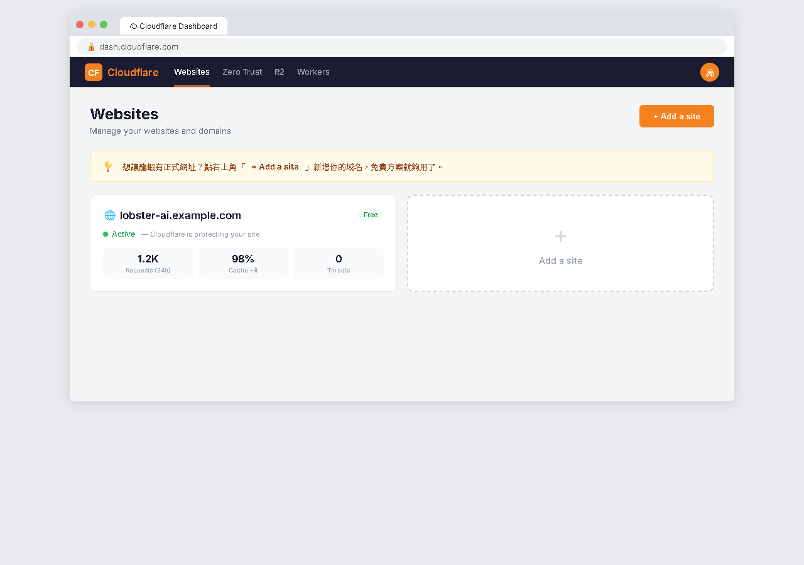
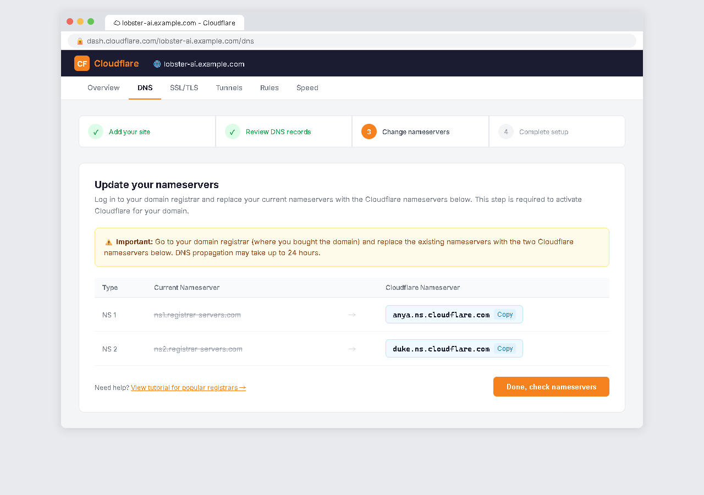
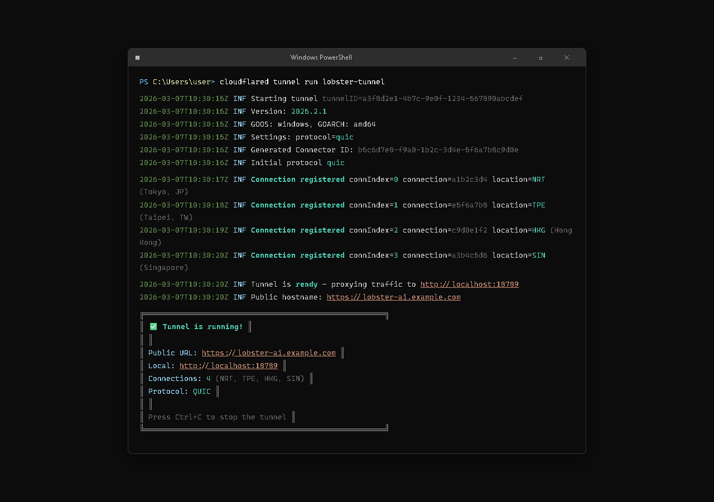
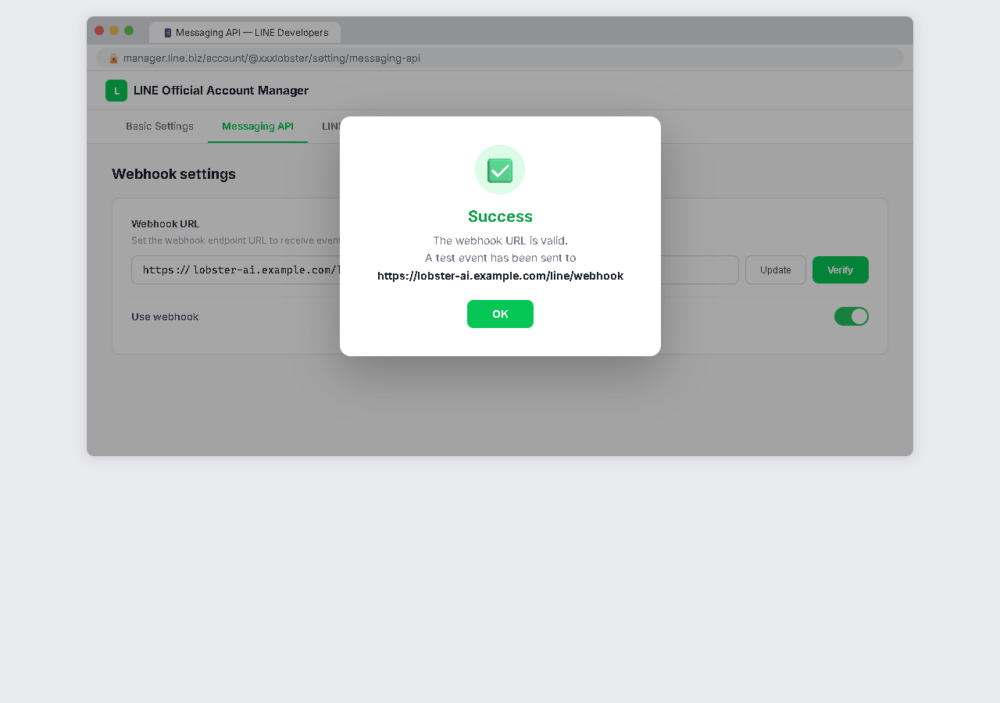

AI Agent 自主代理三王實戰 — 通道篇
CH12 | 正式域名（Cloudflare Tunnel）
一勞永逸解決 ngrok 網址每次都變的問題——用 Cloudflare Tunnel 給你的龍蝦一個永久不變的正式網址
📋 本章學習目標
- 理解 ngrok 的限制和為什麼需要正式域名
- 認識 Cloudflare Tunnel 的運作原理
- 申請 Cloudflare 帳號並設定域名
- 安裝和設定 Cloudflare Tunnel
- 更新 LINE 和 Telegram 的 Webhook
- 了解 HTTPS 和安全性的基本概念
12.1 為什麼要告別 ngrok？
ngrok 在學習階段非常好用——免費、安裝簡單、一行指令就能用。但長期使用有幾個讓人頭痛的問題：
| 問題 | 影響 |
|---|---|
| 網址每次重啟都會變 | 必須手動更新 LINE / Telegram 的 Webhook URL |
| 免費版有連線數限制 | 同時連線太多會被擋 |
| 免費版有流量限制 | 訊息量大時可能斷線 |
| 網址很醜 | https://a1b2c3d4.ngrok-free.app 很難記 |
| ngrok 服務掛掉你也掛 | 第三方服務出問題你的龍蝦就斷線 |
| 免費版會顯示警告頁面 | 第一次造訪會看到「Visit Site」中間頁 |
ngrok vs Cloudflare Tunnel 比較

| 比較項目 | ngrok（免費版） | Cloudflare Tunnel |
|---|---|---|
| 網址 | 隨機字串，每次不同 | 你自己取的，永遠不變 |
| 費用 | 免費（有限制） | 免費（Tunnel 本身免費） |
| 穩定度 | 一般 | 高（Cloudflare 全球 CDN） |
| HTTPS | 有 | 有（自動） |
| 速度 | 會多一層延遲 | 全球節點加速 |
| 好記程度 | ❌ 亂碼網址 | ✅ lobster.你的域名.com |
.xyz 域名第一年只要 30-50 元台幣！
12.2 Cloudflare Tunnel 原理
Cloudflare Tunnel（以前叫 Argo Tunnel）的概念很簡單——在你的電腦和 Cloudflare 之間「打一條隧道」：
LINE 伺服器
↓ 訊息傳到你的域名
Cloudflare 全球網路（幫你接收訊息）
↓ 透過「隧道」送到你的電腦
你的電腦上的龍蝦（port 18789）
外面的人只看到你的域名和 Cloudflare，完全不知道你的電腦 IP 在哪裡。
Cloudflare 的四大關鍵優勢
🏷️ 用自己的域名
網址永遠不變，Webhook 設定一次搞定
🌍 全球最大 CDN 之一
穩定度和速度都比 ngrok 更好
💰 Tunnel 完全免費
你只需要付域名的錢（最便宜 30 元/年）
🔒 自動 HTTPS
Cloudflare 自動幫你申請和管理 SSL 憑證
12.3 申請 Cloudflare 帳號與取得域名
取得域名的方式
✅ 方式一：直接在 Cloudflare 買（最簡單）
價格是「成本價」（沒有加價），直接跟 Cloudflare 整合，省去後面設定 DNS 的步驟
🔄 方式二：在其他域名商買，再轉到 Cloudflare 管理
常見：Namecheap（便宜）、GoDaddy（老牌）
域名怎麼選？
| 域名後綴 | 大約價格（年） | 建議 |
|---|---|---|
.com | 300-400 元 | 最通用，但好名字都被註冊了 |
.xyz | 30-60 元 | 便宜，學習用很適合 |
.top | 30-50 元 | 便宜 |
.tw | 600-800 元 | 台灣域名，較正式 |
.dev | 350-450 元 | 開發者感，自帶 HTTPS |
.xyz 就夠了。例如 mylobster.xyz。
把域名加入 Cloudflare

申請帳號（3 步驟）
- 到
dash.cloudflare.com/sign-up，用 Email 註冊 - 驗證 Email
- 登入 Cloudflare Dashboard
新增域名（如果不是在 Cloudflare 買的）
- Dashboard 點 「Add a site」，輸入域名
- 選擇 「Free」 方案
- Cloudflare 會給你兩組 Nameserver
- 到域名商把 Nameserver 改成 Cloudflare 給的那兩組
- 回到 Cloudflare 點 「Done, check nameservers」
- 等待 DNS 生效（幾分鐘到幾小時不等）

12.4 安裝與設定 Cloudflare Tunnel
步驟一：安裝 cloudflared
# Windows PowerShell winget install Cloudflare.cloudflared # 確認安裝成功 cloudflared --version
步驟二：登入 Cloudflare
cloudflared tunnel login
會自動打開瀏覽器，登入帳號後選擇域名。成功後電腦上會存一個認證檔案（cert.pem）。
步驟三：建立隧道
# 建立隧道（lobster 是自取的名字） cloudflared tunnel create lobster # 設定 DNS 指向 cloudflared tunnel route dns lobster bot.mylobster.xyz
a1b2c3d4-5678-90ab-cdef-1234567890ab），記下來等一下設定檔要用。
建立設定檔與啟動隧道
步驟四：建立 config.yml
路徑：C:\Users\你的使用者名稱\.cloudflared\config.yml
tunnel: 你的隧道UUID
credentials-file: C:\Users\你的使用者名稱\.cloudflared\你的隧道UUID.json
ingress:
- hostname: bot.mylobster.xyz
service: http://localhost:18789
- service: http_status:404
| 設定項目 | 說明 |
|---|---|
tunnel | 你的隧道 UUID |
credentials-file | 認證檔案路徑（建立隧道時自動產生） |
hostname | 你設定的域名 |
service: http://localhost:18789 | 指向龍蝦 Gateway 的埠 |
http_status:404 | 其他所有請求回 404（安全考量） |
步驟五：啟動隧道
cloudflared tunnel run lobster
測試隧道與開機自動啟動

測試隧道是否正常
# 在瀏覽器輸入你的域名 https://bot.mylobster.xyz # 或用 curl 測試 curl https://bot.mylobster.xyz/health
如果龍蝦有在運行（openclaw gateway start），你應該會看到龍蝦的回應。
安裝為 Windows 服務（開機自動啟動）
# 安裝為服務 cloudflared service install # 確認服務狀態 cloudflared service status # 修改 config.yml 後需要重啟 cloudflared service restart
12.5 更新 LINE / Telegram Webhook
隧道建好了，現在要告訴 LINE 和 Telegram：龍蝦的新地址在這裡。

更新 LINE Webhook
- 到 LINE 官方帳號管理後台（
manager.line.biz） - 進入 Channel → Messaging API 分頁
- 把 Webhook URL 改成新域名：
舊的：https://a1b2c3d4.ngrok-free.app/line/webhook 新的：https://bot.mylobster.xyz/line/webhook
- 按 「Verify」 → 看到 「Success」 就大功告成
- 確認 「Use webhook」 是開啟的
更新 Telegram Webhook
# 更新 Webhook 網址 openclaw config set telegram.webhookUrl https://bot.mylobster.xyz # 重啟 Gateway openclaw gateway restart
12.6 HTTPS 與安全性
📬 HTTP
訊息是「明信片」，中間的人都看得到內容
🔒 HTTPS
訊息是「密封的信」，只有寄件人和收件人看得到
LINE 和 Telegram 都要求 Webhook URL 必須是 HTTPS。Cloudflare 會自動幫你搞定——你什麼都不用做！
Cloudflare Tunnel 的安全優勢
🛡️ IP 隱藏
外面的人只看到 Cloudflare 的 IP，不知道你的電腦在哪
🚫 DDoS 防護
有人惡意攻擊，Cloudflare 幫你擋
🔐 全程加密
LINE→Cloudflare 加密，Cloudflare→你的電腦也加密
🔑 UUID 保護
只有知道隧道 UUID 的人才能操控隧道
.cloudflared 資料夾的檔案、域名要記得續約、Cloudflare 帳號要設強密碼和兩步驟驗證。
12.8 小結與展望
☁️ Cloudflare 帳號
全球最大的 CDN 和安全服務，免費方案功能強大
🏷️ 自己的域名
好記、好看、永遠不變，最便宜 30 元/年
🚇 Cloudflare Tunnel
安全的隧道連接，可設定開機自動啟動
🔒 自動 HTTPS
加密通訊，LINE 和 Telegram 都認可。一次設定永久有效！
Q：Tunnel 真的免費嗎？ A：是的，只需付域名費用。
Q：可以同時保留 ngrok？ A：可以，但 Webhook 只能指向一個。
Q：雲端安裝需要 Cloudflare 嗎？ A：不需要，雲端方案已有固定網址。
📖 下一章預告：CH13 更多通道
LINE 和 Telegram 只是龍蝦的兩個「家」——OpenClaw 支援超過 22 種通道！下一章帶你認識 WhatsApp、Discord、Slack 等更多通道。